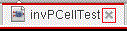
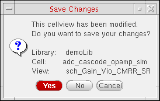
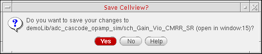

Closing Cellviews in Virtuoso
To close a cellview on a tab in a session window that has more than one tab:
Alternatively, do the following:
- Select the tab you want to close.
-
Do one of the following:
- Choose File – Close.
- Choose Window – Tabs – Close Current Tab.
- Click the X button on the right side of the tab. 
If you have any unsaved changes for that cellview, the Save Changes dialog box is displayed.
To close all cellviews except the one on the current tab in a session window that has more than one tab:
-
Right-click the tab for the cellview you want to keep open.
A pop-up menu appears. -
Choose Close Other Tabs.
Cellviews on all other tabs are closed leaving only the current cellview open in your session window.
Alternatively, do the following:
- Select the tab for the cellview you want to keep open.
-
Choose Window – Tabs – Close Other Tabs.
Cellviews on all other tabs are closed leaving only the current cellview open in your session window.
Closing All Cellviews
You can close all open data using the Close and Purge Data form. The form checks for five types of data - cellviews, physical configuration, constraints, property bag (data.dm), and technology files (tech.db).
This form can display data that have lost connection to their physical files due to one of these reasons:
- A network failure, due to which data on the shared file servers becomes inaccessible
- Deletion of local data
- Renaming of local data
The form lets you purge such data from the virtual memory. It displays relevant warnings in CIW.
Instead of closing each cellview individually, you can close all cellviews at once as follows:
If you do not have any cellviews open, the No Objects to Close prompt appears.
- Choose how Virtuoso handles modified data on File – Close Data selection.
- On the Close and Purge Data form, do one of the following:
-
Click OK.
If you have modified a cellview, the Save Cellview prompt appears.The cellviews you selected are closed and their data purged from virtual memory.
Related Topics
Copying the Current Cellview to a New Session Window
Session Windows and Workspaces
Return to top